Red carpets, press days, city sightings and portrait sessions — over forty photos of Emma in one place. Click any photo to open it full-size.
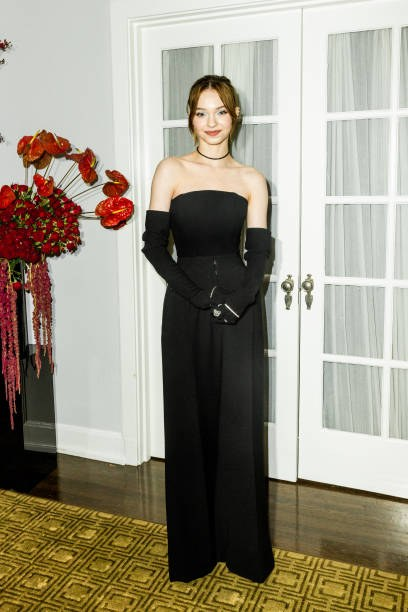
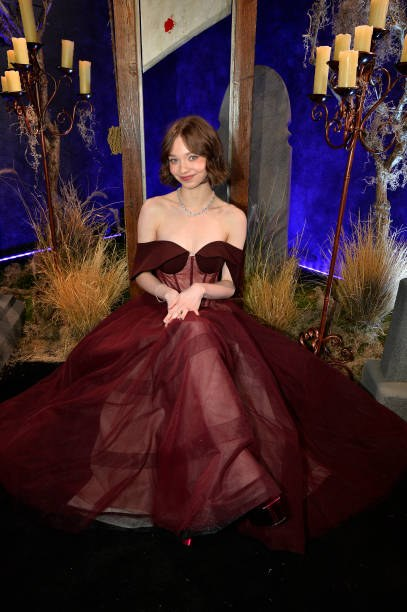
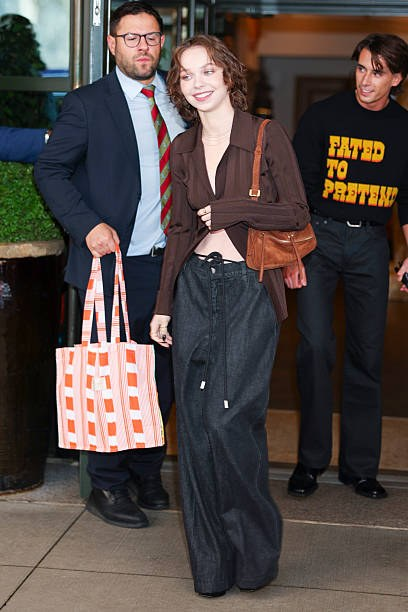
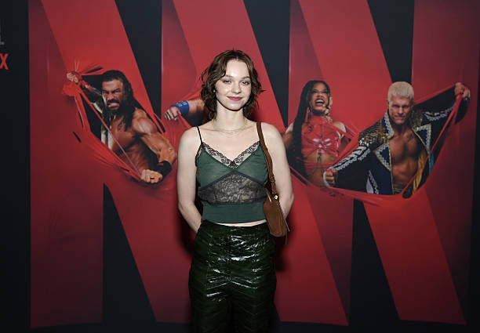
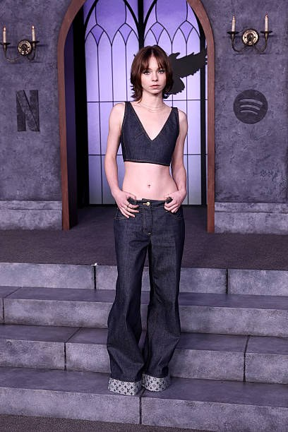
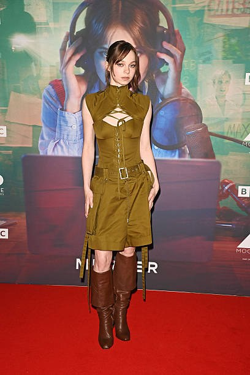
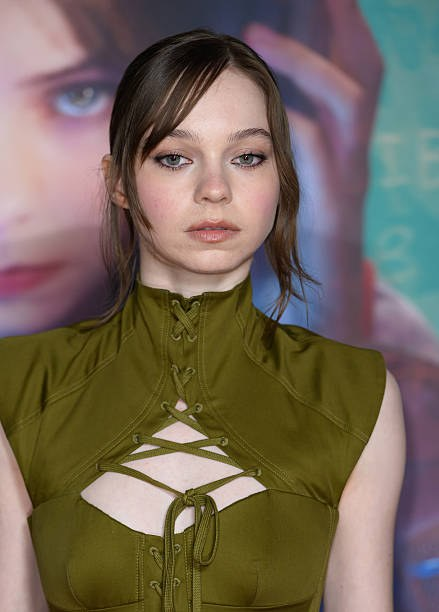
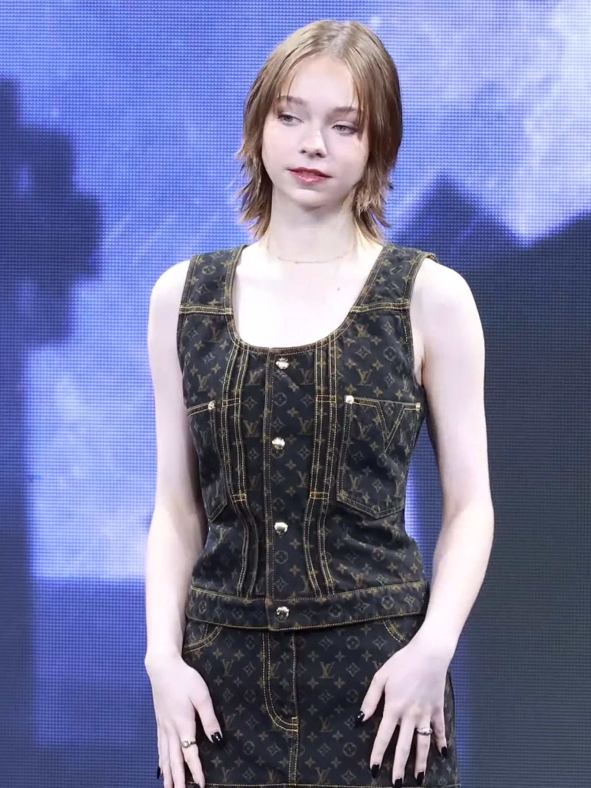
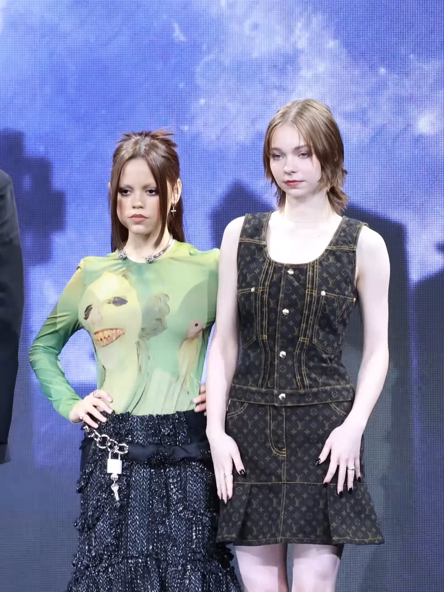
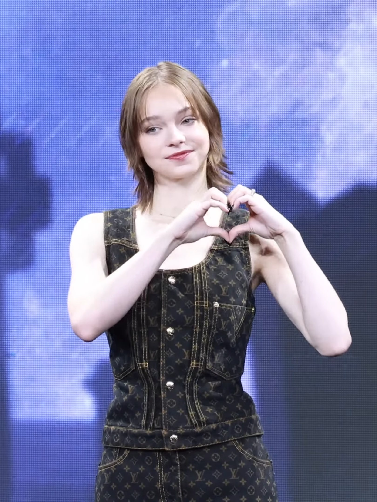
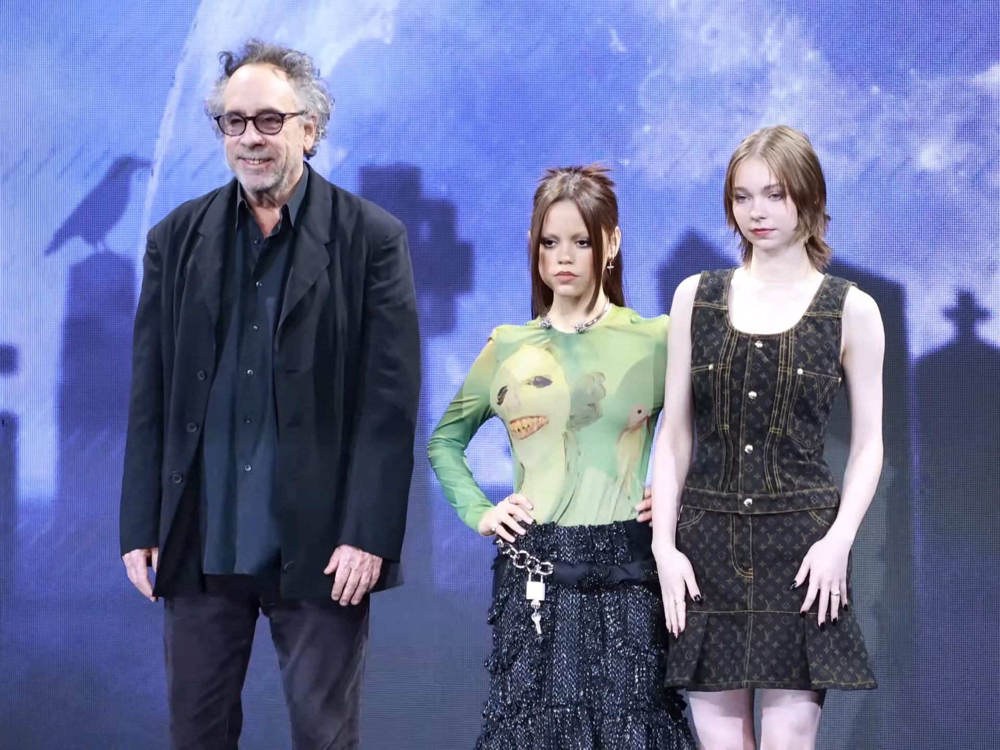
Every picture has a story behind it — start with hers.
Her Life Story →